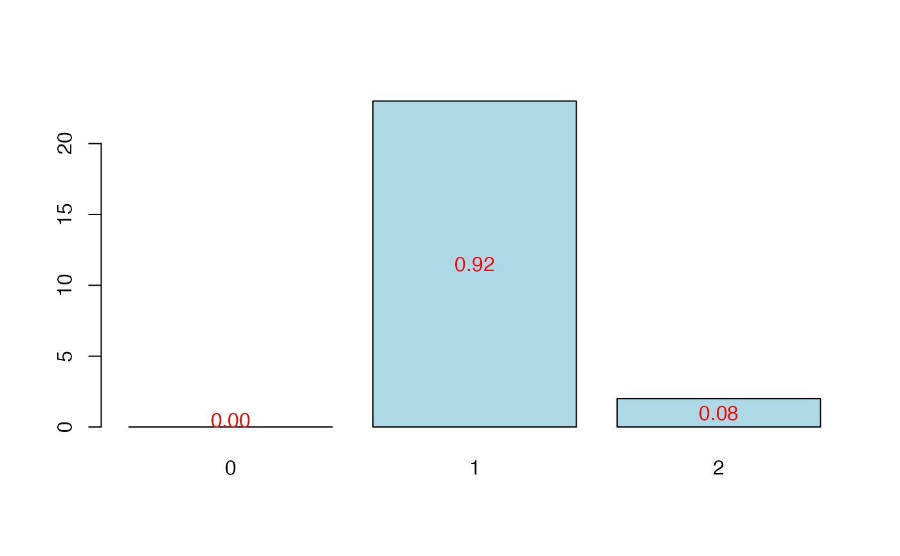

Table method for summary of cross validated PLSR and PLSGLR models
cvtable.RdThe function cvtable is wrapper of cvtable.plsR and cvtable.plsRglm that provides a table summary for the classes "summary.cv.plsRmodel" and "summary.cv.plsRglmmodel"
cvtable.plsR(x,verbose=TRUE, …) cvtable.plsRglm(x,verbose=TRUE, …)
Arguments
| x | an object of the class |
|---|---|
| verbose | should results be displayed ? |
| … | further arguments to be passed to or from methods. |
Value
listList of Information Criteria computed for each fold.
References
Nicolas Meyer, Myriam Maumy-Bertrand et Frederic Bertrand (2010). Comparing the linear and the logistic PLS regression with qualitative predictors: application to allelotyping data. Journal de la Societe Francaise de Statistique, 151(2), pages 1-18. http://publications-sfds.math.cnrs.fr/index.php/J-SFdS/article/view/47
See also
Examples
#> NK: 1 #> Number of groups : 6 #> 1 #> ____************************************************____ #> ____Predicting X without NA neither in X nor in Y____ #> ____Component____ 1 ____ #> ____Component____ 2 ____ #> ____Component____ 3 ____ #> ____Component____ 4 ____ #> ____Component____ 5 ____ #> ____Component____ 6 ____ #> ****________________________________________________**** #> #> 2 #> ____************************************************____ #> ____Predicting X without NA neither in X nor in Y____ #> ____Component____ 1 ____ #> ____Component____ 2 ____ #> ____Component____ 3 ____ #> ____Component____ 4 ____ #> ____Component____ 5 ____ #> ____Component____ 6 ____ #> ****________________________________________________**** #> #> 3 #> ____************************************************____ #> ____Predicting X without NA neither in X nor in Y____ #> ____Component____ 1 ____ #> ____Component____ 2 ____ #> ____Component____ 3 ____ #> ____Component____ 4 ____ #> ____Component____ 5 ____ #> ____Component____ 6 ____ #> ****________________________________________________**** #> #> 4 #> ____************************************************____ #> ____Predicting X without NA neither in X nor in Y____ #> ____Component____ 1 ____ #> ____Component____ 2 ____ #> ____Component____ 3 ____ #> ____Component____ 4 ____ #> ____Component____ 5 ____ #> ____Component____ 6 ____ #> ****________________________________________________**** #> #> 5 #> ____************************************************____ #> ____Predicting X without NA neither in X nor in Y____ #> ____Component____ 1 ____ #> ____Component____ 2 ____ #> ____Component____ 3 ____ #> ____Component____ 4 ____ #> ____Component____ 5 ____ #> ____Component____ 6 ____ #> ****________________________________________________**** #> #> 6 #> ____************************************************____ #> ____Predicting X without NA neither in X nor in Y____ #> ____Component____ 1 ____ #> ____Component____ 2 ____ #> ____Component____ 3 ____ #> ____Component____ 4 ____ #> ____Component____ 5 ____ #> Warning : 1 2 3 4 5 6 7 < 10^{-12} #> Warning only 5 components could thus be extracted #> ****________________________________________________**** #> #> NK: 2 #> Number of groups : 6 #> 1 #> ____************************************************____ #> ____Predicting X without NA neither in X nor in Y____ #> ____Component____ 1 ____ #> ____Component____ 2 ____ #> ____Component____ 3 ____ #> ____Component____ 4 ____ #> ____Component____ 5 ____ #> ____Component____ 6 ____ #> ****________________________________________________**** #> #> 2 #> ____************************************************____ #> ____Predicting X without NA neither in X nor in Y____ #> ____Component____ 1 ____ #> ____Component____ 2 ____ #> ____Component____ 3 ____ #> ____Component____ 4 ____ #> ____Component____ 5 ____ #> ____Component____ 6 ____ #> ****________________________________________________**** #> #> 3 #> ____************************************************____ #> ____Predicting X without NA neither in X nor in Y____ #> ____Component____ 1 ____ #> ____Component____ 2 ____ #> ____Component____ 3 ____ #> ____Component____ 4 ____ #> ____Component____ 5 ____ #> ____Component____ 6 ____ #> ****________________________________________________**** #> #> 4 #> ____************************************************____ #> ____Predicting X without NA neither in X nor in Y____ #> ____Component____ 1 ____ #> ____Component____ 2 ____ #> ____Component____ 3 ____ #> ____Component____ 4 ____ #> ____Component____ 5 ____ #> Warning : 1 2 3 4 5 6 7 < 10^{-12} #> Warning only 5 components could thus be extracted #> ****________________________________________________**** #> #> 5 #> ____************************************************____ #> ____Predicting X without NA neither in X nor in Y____ #> ____Component____ 1 ____ #> ____Component____ 2 ____ #> ____Component____ 3 ____ #> ____Component____ 4 ____ #> ____Component____ 5 ____ #> ____Component____ 6 ____ #> ****________________________________________________**** #> #> 6 #> ____************************************************____ #> ____Predicting X without NA neither in X nor in Y____ #> ____Component____ 1 ____ #> ____Component____ 2 ____ #> ____Component____ 3 ____ #> ____Component____ 4 ____ #> ____Component____ 5 ____ #> ____Component____ 6 ____ #> ****________________________________________________**** #> #> NK: 3 #> Number of groups : 6 #> 1 #> ____************************************************____ #> ____Predicting X without NA neither in X nor in Y____ #> ____Component____ 1 ____ #> ____Component____ 2 ____ #> ____Component____ 3 ____ #> ____Component____ 4 ____ #> ____Component____ 5 ____ #> ____Component____ 6 ____ #> ****________________________________________________**** #> #> 2 #> ____************************************************____ #> ____Predicting X without NA neither in X nor in Y____ #> ____Component____ 1 ____ #> ____Component____ 2 ____ #> ____Component____ 3 ____ #> ____Component____ 4 ____ #> ____Component____ 5 ____ #> ____Component____ 6 ____ #> ****________________________________________________**** #> #> 3 #> ____************************************************____ #> ____Predicting X without NA neither in X nor in Y____ #> ____Component____ 1 ____ #> ____Component____ 2 ____ #> ____Component____ 3 ____ #> ____Component____ 4 ____ #> ____Component____ 5 ____ #> Warning : 1 2 3 4 5 6 7 < 10^{-12} #> Warning only 5 components could thus be extracted #> ****________________________________________________**** #> #> 4 #> ____************************************************____ #> ____Predicting X without NA neither in X nor in Y____ #> ____Component____ 1 ____ #> ____Component____ 2 ____ #> ____Component____ 3 ____ #> ____Component____ 4 ____ #> ____Component____ 5 ____ #> ____Component____ 6 ____ #> ****________________________________________________**** #> #> 5 #> ____************************************************____ #> ____Predicting X without NA neither in X nor in Y____ #> ____Component____ 1 ____ #> ____Component____ 2 ____ #> ____Component____ 3 ____ #> ____Component____ 4 ____ #> ____Component____ 5 ____ #> ____Component____ 6 ____ #> ****________________________________________________**** #> #> 6 #> ____************************************************____ #> ____Predicting X without NA neither in X nor in Y____ #> ____Component____ 1 ____ #> ____Component____ 2 ____ #> ____Component____ 3 ____ #> ____Component____ 4 ____ #> ____Component____ 5 ____ #> ____Component____ 6 ____ #> ****________________________________________________**** #> #> NK: 4 #> Number of groups : 6 #> 1 #> ____************************************************____ #> ____Predicting X without NA neither in X nor in Y____ #> ____Component____ 1 ____ #> ____Component____ 2 ____ #> ____Component____ 3 ____ #> ____Component____ 4 ____ #> ____Component____ 5 ____ #> ____Component____ 6 ____ #> ****________________________________________________**** #> #> 2 #> ____************************************************____ #> ____Predicting X without NA neither in X nor in Y____ #> ____Component____ 1 ____ #> ____Component____ 2 ____ #> ____Component____ 3 ____ #> ____Component____ 4 ____ #> ____Component____ 5 ____ #> ____Component____ 6 ____ #> ****________________________________________________**** #> #> 3 #> ____************************************************____ #> ____Predicting X without NA neither in X nor in Y____ #> ____Component____ 1 ____ #> ____Component____ 2 ____ #> ____Component____ 3 ____ #> ____Component____ 4 ____ #> ____Component____ 5 ____ #> ____Component____ 6 ____ #> ****________________________________________________**** #> #> 4 #> ____************************************************____ #> ____Predicting X without NA neither in X nor in Y____ #> ____Component____ 1 ____ #> ____Component____ 2 ____ #> ____Component____ 3 ____ #> ____Component____ 4 ____ #> ____Component____ 5 ____ #> ____Component____ 6 ____ #> ****________________________________________________**** #> #> 5 #> ____************************************************____ #> ____Predicting X without NA neither in X nor in Y____ #> ____Component____ 1 ____ #> ____Component____ 2 ____ #> ____Component____ 3 ____ #> ____Component____ 4 ____ #> ____Component____ 5 ____ #> Warning : 1 2 3 4 5 6 7 < 10^{-12} #> Warning only 5 components could thus be extracted #> ****________________________________________________**** #> #> 6 #> ____************************************************____ #> ____Predicting X without NA neither in X nor in Y____ #> ____Component____ 1 ____ #> ____Component____ 2 ____ #> ____Component____ 3 ____ #> ____Component____ 4 ____ #> ____Component____ 5 ____ #> ____Component____ 6 ____ #> ****________________________________________________**** #> #> NK: 5 #> Number of groups : 6 #> 1 #> ____************************************************____ #> ____Predicting X without NA neither in X nor in Y____ #> ____Component____ 1 ____ #> ____Component____ 2 ____ #> ____Component____ 3 ____ #> ____Component____ 4 ____ #> ____Component____ 5 ____ #> ____Component____ 6 ____ #> ****________________________________________________**** #> #> 2 #> ____************************************************____ #> ____Predicting X without NA neither in X nor in Y____ #> ____Component____ 1 ____ #> ____Component____ 2 ____ #> ____Component____ 3 ____ #> ____Component____ 4 ____ #> ____Component____ 5 ____ #> ____Component____ 6 ____ #> ****________________________________________________**** #> #> 3 #> ____************************************************____ #> ____Predicting X without NA neither in X nor in Y____ #> ____Component____ 1 ____ #> ____Component____ 2 ____ #> ____Component____ 3 ____ #> ____Component____ 4 ____ #> ____Component____ 5 ____ #> Warning : 1 2 3 4 5 6 7 < 10^{-12} #> Warning only 5 components could thus be extracted #> ****________________________________________________**** #> #> 4 #> ____************************************************____ #> ____Predicting X without NA neither in X nor in Y____ #> ____Component____ 1 ____ #> ____Component____ 2 ____ #> ____Component____ 3 ____ #> ____Component____ 4 ____ #> ____Component____ 5 ____ #> ____Component____ 6 ____ #> ****________________________________________________**** #> #> 5 #> ____************************************************____ #> ____Predicting X without NA neither in X nor in Y____ #> ____Component____ 1 ____ #> ____Component____ 2 ____ #> ____Component____ 3 ____ #> ____Component____ 4 ____ #> ____Component____ 5 ____ #> ____Component____ 6 ____ #> ****________________________________________________**** #> #> 6 #> ____************************************************____ #> ____Predicting X without NA neither in X nor in Y____ #> ____Component____ 1 ____ #> ____Component____ 2 ____ #> ____Component____ 3 ____ #> ____Component____ 4 ____ #> ____Component____ 5 ____ #> ____Component____ 6 ____ #> ****________________________________________________**** #>#> ____************************************************____ #> ____Component____ 1 ____ #> ____Component____ 2 ____ #> ____Component____ 3 ____ #> ____Component____ 4 ____ #> ____Component____ 5 ____ #> ____Component____ 6 ____ #> ____Predicting X without NA neither in X nor in Y____ #> ****________________________________________________**** #> #> #> NK: 1, 2, 3, 4, 5 #> #> CV Q2 criterion: #> 0 1 #> 0 5 #> #> CV Press criterion: #> 1 2 3 4 #> 0 0 2 3data(Cornell) cv.modpls <- cv.plsR(Y~.,data=Cornell,nt=6,K=6,NK=25,verbose=FALSE) res.cv.modpls <- cvtable(summary(cv.modpls))#> ____************************************************____ #> ____Component____ 1 ____ #> ____Component____ 2 ____ #> ____Component____ 3 ____ #> ____Component____ 4 ____ #> ____Component____ 5 ____ #> ____Component____ 6 ____ #> ____Predicting X without NA neither in X nor in Y____ #> ****________________________________________________**** #> #> #> NK: 1, 2, 3, 4, 5, 6, 7, 8, 9, 10 #> NK: 11, 12, 13, 14, 15, 16, 17, 18, 19, 20 #> NK: 21, 22, 23, 24, 25 #> #> CV Q2 criterion: #> 0 1 2 #> 0 19 6 #> #> CV Press criterion: #> 1 2 3 4 5 #> 0 0 8 16 1rm(list=c("cv.modpls","res.cv.modpls")) data(Cornell) cv.modpls <- cv.plsR(Y~.,data=Cornell,nt=6,K=6,NK=100,verbose=FALSE) res.cv.modpls <- cvtable(summary(cv.modpls))#> ____************************************************____ #> ____Component____ 1 ____ #> ____Component____ 2 ____ #> ____Component____ 3 ____ #> ____Component____ 4 ____ #> ____Component____ 5 ____ #> ____Component____ 6 ____ #> ____Predicting X without NA neither in X nor in Y____ #> ****________________________________________________**** #> #> #> NK: 1, 2, 3, 4, 5, 6, 7, 8, 9, 10 #> NK: 11, 12, 13, 14, 15, 16, 17, 18, 19, 20 #> NK: 21, 22, 23, 24, 25, 26, 27, 28, 29, 30 #> NK: 31, 32, 33, 34, 35, 36, 37, 38, 39, 40 #> NK: 41, 42, 43, 44, 45, 46, 47, 48, 49, 50 #> NK: 51, 52, 53, 54, 55, 56, 57, 58, 59, 60 #> NK: 61, 62, 63, 64, 65, 66, 67, 68, 69, 70 #> NK: 71, 72, 73, 74, 75, 76, 77, 78, 79, 80 #> NK: 81, 82, 83, 84, 85, 86, 87, 88, 89, 90 #> NK: 91, 92, 93, 94, 95, 96, 97, 98, 99, 100 #> #> CV Q2 criterion: #> 0 1 2 #> 0 84 16 #> #> CV Press criterion: #> 1 2 3 4 5 #> 0 0 41 44 15rm(list=c("cv.modpls","res.cv.modpls")) data(Cornell) cv.modplsglm <- cv.plsRglm(Y~.,data=Cornell,nt=6,K=6, modele="pls-glm-gaussian",NK=100,verbose=FALSE) res.cv.modplsglm <- cvtable(summary(cv.modplsglm))#> ____************************************************____ #> #> Family: gaussian #> Link function: identity #> #> ____Component____ 1 ____ #> ____Component____ 2 ____ #> ____Component____ 3 ____ #> ____Component____ 4 ____ #> ____Component____ 5 ____ #> ____Component____ 6 ____ #> ____Predicting X without NA neither in X or Y____ #> ****________________________________________________**** #> #> #> NK: 1, 2, 3, 4, 5, 6, 7, 8, 9, 10 #> NK: 11, 12, 13, 14, 15, 16, 17, 18, 19, 20 #> NK: 21, 22, 23, 24, 25, 26, 27, 28, 29, 30 #> NK: 31, 32, 33, 34, 35, 36, 37, 38, 39, 40 #> NK: 41, 42, 43, 44, 45, 46, 47, 48, 49, 50 #> NK: 51, 52, 53, 54, 55, 56, 57, 58, 59, 60 #> NK: 61, 62, 63, 64, 65, 66, 67, 68, 69, 70 #> NK: 71, 72, 73, 74, 75, 76, 77, 78, 79, 80 #> NK: 81, 82, 83, 84, 85, 86, 87, 88, 89, 90 #> NK: 91, 92, 93, 94, 95, 96, 97, 98, 99, 100 #> #> CV Q2Chi2 criterion: #> 0 1 2 #> 0 24 76 #> #> CV PreChi2 criterion: #> 1 2 3 4 5 #> 0 23 55 21 1